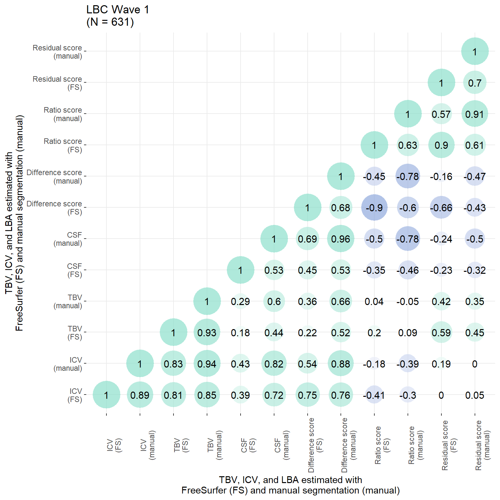
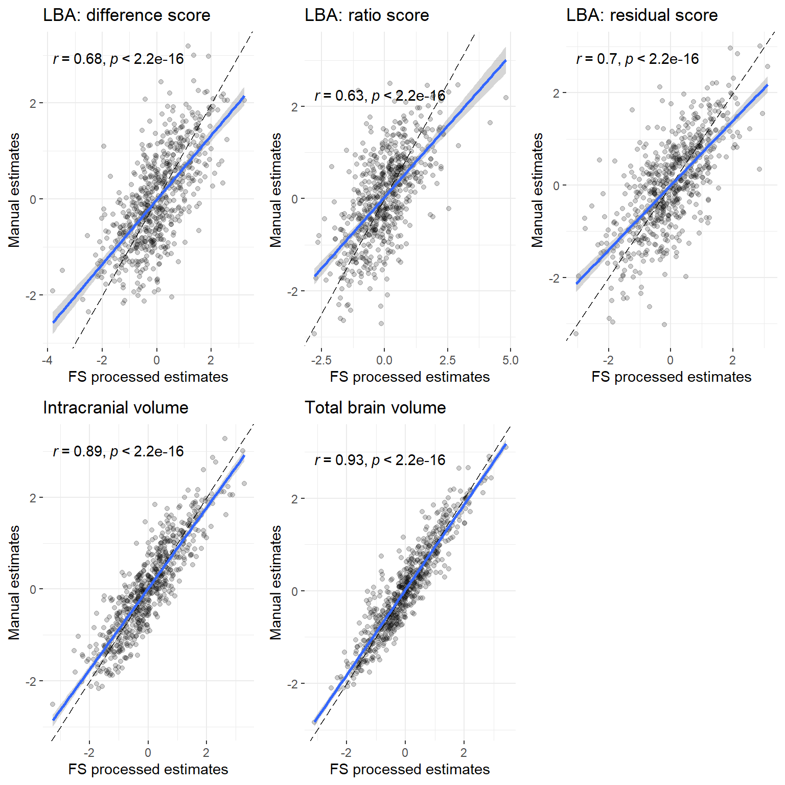
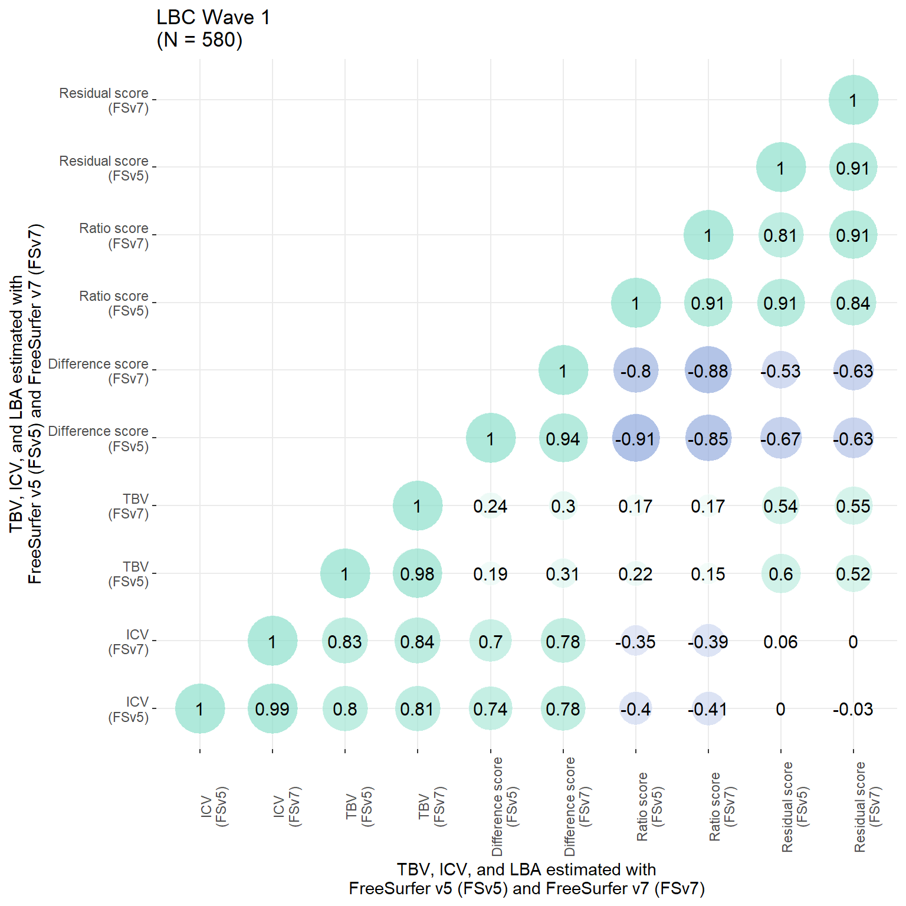
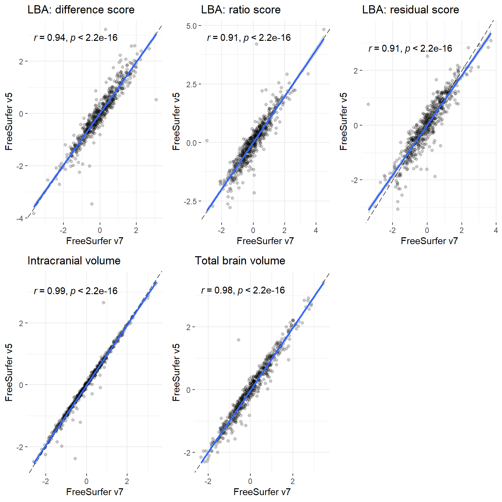

Code
library(data.table)
library(readxl)
library(ggplot2)
library(stringr)
library(ggpubr)
library(cowplot)
library(dplyr)
library(stringr)Here we compare
whether the biased nature of eTIV affected LBA estimates by comparing LBA score (as used in paper from FS processing) against LBA scores from manually estimated ICV. The latter is only available in neuroimaging visit 1
whether ICV, TBV and LBA estimates differ between FSv5 and FSv7
plot_heatmap = function(dat = both[,c("ICV","TBV", "diff", "ratio", "resid")], axisNames = c("ICV","TBV","Difference\nscore","Ratio\nscore","Residual\nscore")){
# define function to obtain lower triangle
get_lower_tri<-function(cormat){
cormat[upper.tri(cormat)] <- NA
return(cormat)
}
# get correlation matrix for both samples together
cor = cor(dat, use = "pairwise.complete.obs")
cor = get_lower_tri(cor)
# melt matrix
melted = reshape2::melt(cor)
# get rounded value
melted$value_round = round(melted$value, digit = 2)
melted$distance0 = abs(melted$value)
# plot
library(ggplot2)
p = ggplot(data = melted)+
geom_point(aes(x = Var1, y = Var2, shape = value, fill = value, size = distance0), shape = 21, alpha = 0.7, colour = "white") +
scale_fill_gradient2(low = "#82A0D8", high = "#8DDFCB", mid = "white",
midpoint = 0, limit = c(-1,1), space = "Lab" ,name="Correlation", guide = "legend")+
scale_size_continuous(range = c(1, 15), guide = "none")+
geom_text(aes(Var1, Var2, label = value_round), color = "black", size = 4)+
xlab("")+
ylab("")+
#ggtitle("Pearson's corelations")+
scale_x_discrete(labels = axisNames)+
scale_y_discrete(labels = axisNames)+
guides(fill = "none")+
theme_bw()+
theme(panel.border = element_blank())
return(p)
}# Read in and format the data
###### NEUROIMAGING WAVE 1
#------------------------------------------------------------------------------------
# read in TBV as sum of "TotalGrayVol", "Right.Cerebellum.White.Matter", "Left.Cerebellum.White.Matter", "CorticalWhiteMatterVol"
orig = fread(paste0(STRADLdir, "/LBC1936_crossNeuroWave1.txt"))
names(orig)[grepl("ICVstand", names(orig))] <- "ICV_stand"
names(orig)[grepl("TBVstand", names(orig))] <- "TBV_stand"
names(orig)[grepl("CSFstand", names(orig))] <- "CSF_stand"
cols = c("lbc36no", names(orig)[grepl("_stand", names(orig))])
orig = orig[, ..cols]
names(orig)[grepl("_stand", names(orig))] <- paste0("orig_", names(orig)[grepl("_stand", names(orig))])
#--------------------------------------------------------------------------
# in-house processing
# read in home-brew version shared by Paul
man = read_excel(paste0(MANdir, "/Brain_ICV_threeMethods_forAnna.xlsx"))
# contain three sets of data: editedvol, fastvol, SSvol
man = man[, c("lbc_no", "ICVeditedvol", "Brain_inhousevol")]
names(man)[grepl("lbc", names(man))] <- "lbc36no"
# delete missing values
man = man[complete.cases(man),]
# remove any participants with TBV > ICV (1)
man = man[man$ICVeditedvol > man$Brain_inhousevol,]
# difference scores for each method
man$inhouse_diff = man$ICVeditedvol - man$Brain_inhousevol
# ratio scores for each method
man$inhouse_ratio = man$Brain_inhousevol / man$ICVeditedvol
# residual socres for each method
model <- lm(Brain_inhousevol ~ ICVeditedvol, data = man)
man$inhouse_resid = resid(model)
# identify cols to standardise
cols = names(man)[grepl("diff|ratio|resid", names(man))]
man[, cols] = scale(man[, cols])
names(man)[grepl("diff|ratio|resid", names(man))] = paste0(names(man)[grepl("diff|ratio|resid", names(man))], "_stand")
# standardise TBv ad ICV
man$inhouse_TBV_stand = scale(man$Brain_inhousevol)
man$inhouse_ICV_stand = scale(man$ICVeditedvol)
# keep columns of interest only
cols = c("lbc36no", names(man)[grepl("_stand", names(man))])
man = man[, cols]
# merge all three
all = merge(orig, man, by = "lbc36no")
# add in manual CSF values I had to specifically apply for from Paul so they are saved in another document
# using wave 2 as all others are also from first neuroimaging visit
csf <- fread(paste0(STRADLdir, "/LBC1936_csf_manual.txt"))
names(csf)[grepl("csf_mm3_w2", names(csf))] <- "CSF"
csf$inhouse_CSF_stand <- scale(csf$CSF)[,1]
all = merge(all, csf[,c("lbc36no", "inhouse_CSF_stand")], by = "lbc36no")
# re-calculate resid just in case participants got deleted
model <- lm(orig_TBV_stand ~ orig_ICV_stand, data = all)
all$orig_resid_stand = as.vector(scale(resid(model)))
model <- lm(inhouse_TBV_stand ~ inhouse_ICV_stand, data = all)
all$inhouse_resid_stand = as.vector(scale(resid(model)))Of particular interest is the correlation between the residual score from original FS processing and the manually estimated ICV, which indicates that the residual score is biased towards ICV (larger ICVs, larger LBA; r = 0.19).
# number of participants
n = nrow(all)
# plot correlations between atrophy measures
p = plot_heatmap(dat = all[,c("orig_ICV_stand", "inhouse_ICV_stand", "orig_TBV_stand", "inhouse_TBV_stand", "orig_CSF_stand", "inhouse_CSF_stand", "orig_diff_stand", "inhouse_diff_stand", "orig_ratio_stand", "inhouse_ratio_stand","orig_resid_stand", "inhouse_resid_stand")],
axisNames = c("ICV\n(FS)", "ICV\n(manual)", "TBV\n(FS)", "TBV\n(manual)", "CSF\n(FS)", "CSF\n(manual)", "Difference score\n(FS)", "Difference score\n(manual)", "Ratio score\n(FS)", "Ratio score\n(manual)", "Residual score\n(FS)", "Residual score\n(manual)"))+
ggtitle(paste0("LBC Wave 1\n(N = ",n,")"))+
theme(axis.text.x = element_text(angle = 90))+
xlab("TBV, ICV, and LBA estimated with\nFreeSurfer (FS) and manual segmentation (manual)")+
ylab("TBV, ICV, and LBA estimated with\nFreeSurfer (FS) and manual segmentation (manual)")
p
Pearson's product-moment correlation
data: all$orig_resid_stand and all$inhouse_ICV_stand
t = 4.8493, df = 629, p-value = 1.564e-06
alternative hypothesis: true correlation is not equal to 0
95 percent confidence interval:
0.1134659 0.2639773
sample estimates:
cor
0.1898367 # ICV
corICV = ggplot(data = all, aes(x = orig_ICV_stand, y = inhouse_ICV_stand))+
geom_point(alpha = 0.2)+
stat_cor(method = "pearson", cor.coef.name = "r")+
geom_abline(slope = 1, intercept = 0, colour = "black", linetype = "longdash")+
theme_bw()+
geom_smooth(method='lm')+
ylab("Manual estimates")+
xlab("FS processed estimates")+
ggtitle("Intracranial volume")+
theme(panel.border = element_blank())
# TBV
corTBV = ggplot(data = all, aes(x = orig_TBV_stand, y = inhouse_TBV_stand))+
geom_point(alpha = 0.2)+
stat_cor(method = "pearson", cor.coef.name = "r")+
geom_abline(slope = 1, intercept = 0, colour = "black", linetype = "longdash")+
theme_bw()+
geom_smooth(method='lm')+
ylab("Manual estimates")+
xlab("FS processed estimates")+
ggtitle("Total brain volume")+
theme(panel.border = element_blank())
# difference score
cordiff = ggplot(data = all, aes(x = orig_diff_stand, y = inhouse_diff_stand))+
geom_point(alpha = 0.2)+
stat_cor(method = "pearson", cor.coef.name = "r")+
geom_abline(slope = 1, intercept = 0, colour = "black", linetype = "longdash")+
theme_bw()+
geom_smooth(method='lm')+
ylab("Manual estimates")+
xlab("FS processed estimates")+
ggtitle("LBA: difference score")+
theme(panel.border = element_blank())
# ratio score
corratio = ggplot(data = all, aes(x = orig_ratio_stand, y = inhouse_ratio_stand))+
geom_point(alpha = 0.2)+
stat_cor(method = "pearson", cor.coef.name = "r")+
geom_abline(slope = 1, intercept = 0, colour = "black", linetype = "longdash")+
theme_bw()+
geom_smooth(method='lm')+
ylab("Manual estimates")+
xlab("FS processed estimates")+
ggtitle("LBA: ratio score")+
theme(panel.border = element_blank())
# residual score
corresid = ggplot(data = all, aes(x = orig_resid_stand, y = inhouse_resid_stand))+
geom_point(alpha = 0.2)+
stat_cor(method = "pearson", cor.coef.name = "r")+
geom_abline(slope = 1, intercept = 0, colour = "black", linetype = "longdash")+
theme_bw()+
geom_smooth(method='lm')+
ylab("Manual estimates")+
xlab("FS processed estimates")+
ggtitle("LBA: residual score")+
theme(panel.border = element_blank())
p = plot_grid(cordiff, corratio, corresid, corICV, corTBV, nrow = 2)
p
# orig was already read in above
v5 <- orig
names(v5) <- str_replace(names(v5), "orig_", "v5_")
v7 <- fread(paste0(out, "/LBC1936_TBV_ICV_Fsv7_Josprocessing.txt"))
# remove any participants with TBV > ICV (0)
v7 = v7[v7$ICV > v7$TBV,]
# this data has not been qc'd yet and there are a few extreme outliers in ICV
# cut-off outliers at 4SDs (2 participants)
v7$v7_TBV_stand <- scale(v7$TBV)[,1]
v7$v7_ICV_stand <- scale(v7$ICV)[,1]
# sum(v7$v7_ICV_stand > 4 | v7$v7_ICV_stand < -4)
v7 <- v7[v7$v7_ICV_stand <= 4 & v7$v7_ICV_stand >= -4,]
v7$v7_ICV_stand <- scale(v7$ICV)[,1]
# difference scores for each method
v7$v7_diff = v7$ICV - v7$TBV
# ratio scores for each method
v7$v7_ratio = v7$TBV / v7$ICV
# residual socres for each method
model <- lm(TBV ~ ICV, data = v7)
v7$v7_resid = resid(model)
# identify cols to standardise
v7$v7_diff_stand <- scale(v7$v7_diff)[,1]
v7$v7_ratio_stand <- scale(v7$v7_ratio)[,1]
v7$v7_resid_stand <- scale(v7$v7_resid)[,1]
# keep columns of interest only
#cols = c("lbc36no", names(v7)[grepl("_stand", names(v7))])
#v7 = v7[, ..cols]
both = merge(v5, v7, by = "lbc36no")
# there is one more participant whose brain fills 43% of the intracranial vault in v7 but has been identified to fill 70% in v5 data which was manually edited in some cases (average 70% SD = 5%), part360489
# Jo checked this mask in itksnap for me and confirmed that one cortical hemisphere has not successfully segmented
both <- both[both$v7_ratio > 0.5,]
# re-calculate resid just in case participants got deleted
model <- lm(v5_TBV_stand ~ v5_ICV_stand, data = both)
both$v5_resid_stand = as.vector(scale(resid(model)))
model <- lm(v7_TBV_stand ~ v7_ICV_stand, data = both)
both$v7_resid_stand = as.vector(scale(resid(model)))# number of participants
n = nrow(both)
# plot correlations between atrophy measures
p = plot_heatmap(dat = both[,c("v5_ICV_stand",
"v7_ICV_stand",
"v5_TBV_stand",
"v7_TBV_stand",
"v5_diff_stand",
"v7_diff_stand",
"v5_ratio_stand",
"v7_ratio_stand",
"v5_resid_stand",
"v7_resid_stand")],
axisNames = c("ICV\n(FSv5)",
"ICV\n(FSv7)",
"TBV\n(FSv5)",
"TBV\n(FSv7)",
"Difference score\n(FSv5)",
"Difference score\n(FSv7)",
"Ratio score\n(FSv5)",
"Ratio score\n(FSv7)",
"Residual score\n(FSv5)",
"Residual score\n(FSv7)"))+
ggtitle(paste0("LBC Wave 1\n(N = ",n,")"))+
theme(axis.text.x = element_text(angle = 90))+
xlab("TBV, ICV, and LBA estimated with\nFreeSurfer v5 (FSv5) and FreeSurfer v7 (FSv7)")+
ylab("TBV, ICV, and LBA estimated with\nFreeSurfer v5 (FSv5) and FreeSurfer v7 (FSv7)")
p
# ICV
corICV = ggplot(data = both, aes(x = v7_ICV_stand, y = v5_ICV_stand))+
geom_point(alpha = 0.2)+
stat_cor(method = "pearson", cor.coef.name = "r")+
geom_abline(slope = 1, intercept = 0, colour = "black", linetype = "longdash")+
theme_bw()+
geom_smooth(method='lm')+
ylab("FreeSurfer v5")+
xlab("FreeSurfer v7")+
ggtitle("Intracranial volume")+
theme(panel.border = element_blank())
# TBV
corTBV = ggplot(data = both, aes(x = v7_TBV_stand, y = v5_TBV_stand))+
geom_point(alpha = 0.2)+
stat_cor(method = "pearson", cor.coef.name = "r")+
geom_abline(slope = 1, intercept = 0, colour = "black", linetype = "longdash")+
theme_bw()+
geom_smooth(method='lm')+
ylab("FreeSurfer v5")+
xlab("FreeSurfer v7")+
ggtitle("Total brain volume")+
theme(panel.border = element_blank())
# difference score
cordiff = ggplot(data = both, aes(x = v7_diff_stand, y = v5_diff_stand))+
geom_point(alpha = 0.2)+
stat_cor(method = "pearson", cor.coef.name = "r")+
geom_abline(slope = 1, intercept = 0, colour = "black", linetype = "longdash")+
theme_bw()+
geom_smooth(method='lm')+
ylab("FreeSurfer v5")+
xlab("FreeSurfer v7")+
ggtitle("LBA: difference score")+
theme(panel.border = element_blank())
# ratio score
corratio = ggplot(data = both, aes(x = v7_ratio_stand, y = v5_ratio_stand))+
geom_point(alpha = 0.2)+
stat_cor(method = "pearson", cor.coef.name = "r")+
geom_abline(slope = 1, intercept = 0, colour = "black", linetype = "longdash")+
theme_bw()+
geom_smooth(method='lm')+
ylab("FreeSurfer v5")+
xlab("FreeSurfer v7")+
ggtitle("LBA: ratio score")+
theme(panel.border = element_blank())
# residual score
corresid = ggplot(data = both, aes(x = v7_resid_stand, y = v5_resid_stand))+
geom_point(alpha = 0.2)+
stat_cor(method = "pearson", cor.coef.name = "r")+
geom_abline(slope = 1, intercept = 0, colour = "black", linetype = "longdash")+
theme_bw()+
geom_smooth(method='lm')+
ylab("FreeSurfer v5")+
xlab("FreeSurfer v7")+
ggtitle("LBA: residual score")+
theme(panel.border = element_blank())
p = plot_grid(cordiff, corratio, corresid, corICV, corTBV, nrow = 2)
p